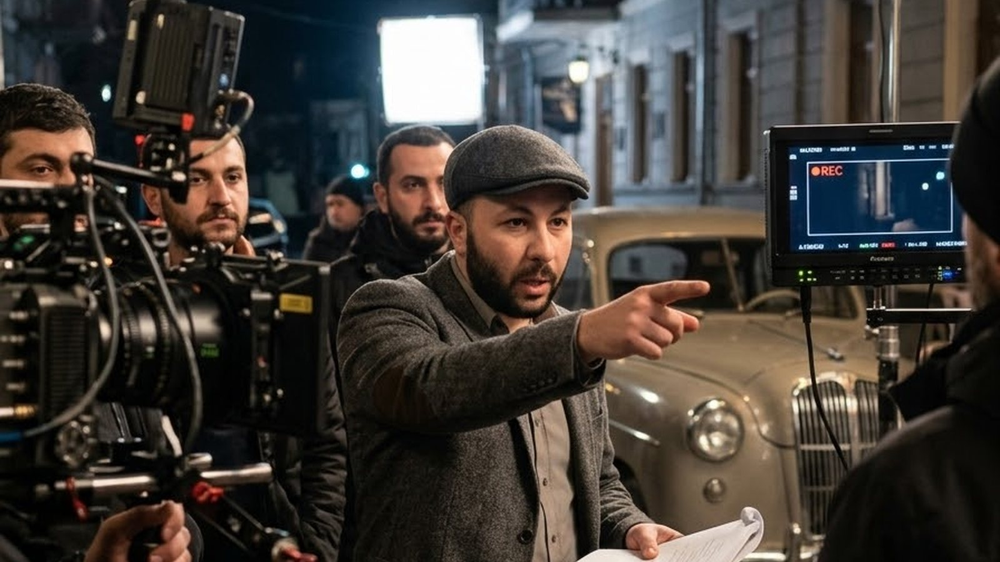

სტატიები კინო
კინორეჟისორი
რეჟისურა, სცენარი და თამაში — საქმის ის ნაწილი, რომელსაც ყველაზე ხანგრძლივი საჯარო ჩანაწერი აქვს

ამ საიტზე წარმოდგენილი ყველაფრიდან კინოს აქვს ყველაზე ხანგრძლივი საჯარო კვალი — ის ჩამოთვლილია, დათარიღებულია, კრედიტირებულია და ნებისმიერს შეუძლია შეამოწმოს.
მაქსი დარკოსაძე კრედიტირებულია როგორც რეჟისორი, სცენარისტი და მსახიობი. 2016 წელს დადგა და მთავარ როლში ითამაშა რომანტიკულ კომედიაში Cowards, რომელიც აშშ-ში შეიქმნა; მის კრედიტებშია ასევე Star Wars Zero. სრული და განახლებული ფილმოგრაფია მის IMDb-გვერდზეა.
თბილისი და ნიუ-იორკი
დაიბადა თბილისში, 1995 წლის 26 აგვისტოს, და მას შემდეგ საქართველოსა და ნიუ-იორკს შორის მუშაობს. ორივე ქალაქი სხვადასხვაგვარად ჩნდება მის ნამუშევრებში: ერთი მასალას აძლევს, მეორე — ინდუსტრიას.
იგივე დისციპლინა, სხვა ოთახი
კითხვაზე, რა აქვს საერთო გადასაღებ მოედანს საოპერაციოსთან ან თვითმფრინავის კაბინასთან, ის იმ პასუხს იმეორებს, რომელსაც ყველაფერზე იძლევა: ჯგუფი, გეგმა, ბრიფინგი და ერთი ადამიანი, რომელიც შედეგზე პასუხს აგებს. შედეგები უფრო მსუბუქია. მეთოდი — არა.
მიმდინარე კრედიტები, თარიღები და სათაურები: IMDb. კულისები და ახალი ნამუშევრები: Instagram.